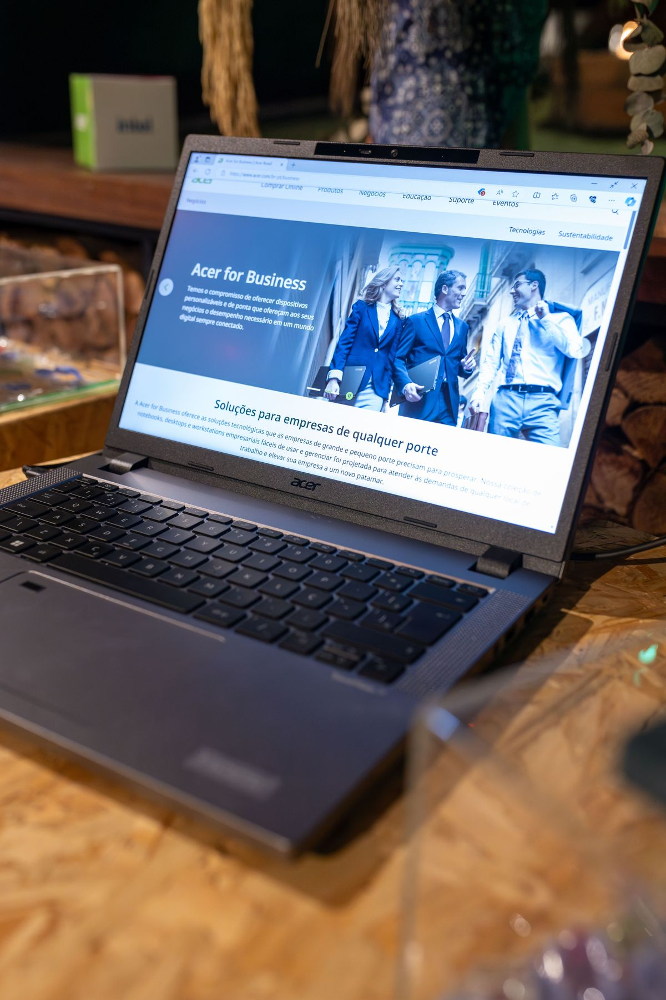

Kamu pernah menerima file PDF yang isinya harus diubah, tapi tidak bisa diedit langsung? Misalnya surat lamaran, tugas kuliah, atau formulir dari kantor yang perlu diperbaiki isinya. Mengetik ulang dari nol jelas buang waktu, apalagi kalau dokumennya panjang. Kabar baiknya, ada beberapa cara gratis untuk mengubah PDF jadi file Word yang bisa diedit lagi, dan semuanya bisa dilakukan dari HP maupun laptop tanpa instal aplikasi berat. Per Oktober 2026, cara-cara di bawah ini masih bisa dipakai gratis. Pilih yang paling cocok dengan PDF kamu.
Kenali dulu jenis PDF kamu sebelum memilih cara
Sebelum mulai, cek dulu PDF kamu termasuk yang mana. PDF berisi teks biasa, misalnya dokumen yang dibuat dari Word lalu disimpan sebagai PDF, paling mudah dikonversi dan hasilnya biasanya rapi. PDF hasil pindaian atau foto, misalnya scan KTP atau halaman buku yang difoto, jauh lebih sulit karena isinya gambar, bukan teks. Untuk jenis ini kamu butuh fitur OCR, yaitu teknologi yang membaca huruf dari gambar, dan tidak semua layanan gratis menyediakannya. Terakhir, PDF dengan tabel dan gambar yang rumit hampir selalu butuh sedikit perbaikan manual sesudah dikonversi, apapun caranya. Jadi kalau hasil pertamamu agak berantakan, itu wajar, bukan salahmu.
Cara 1: Pakai Google Docs, gratis dan tanpa aplikasi tambahan
Ini cara yang paling hemat kalau kamu sudah punya akun Google. Google Docs bisa membuka PDF lalu mengubahnya jadi dokumen yang bisa diedit, dan kamu tinggal mengunduhnya sebagai file Word. Langkahnya seperti ini.
- Buka Google Drive di browser HP atau laptop, lalu unggah file PDF kamu.
- Klik kanan file PDF itu, pilih Buka dengan, lalu pilih Google Docs.
- Tunggu sampai dokumen terbuka. Teks PDF akan muncul sebagai dokumen yang bisa diedit.
- Klik menu File, pilih Download, lalu pilih Microsoft Word (.docx).
- File Word hasil konversi akan tersimpan di perangkatmu dan siap diedit.
Cara ini paling cocok untuk PDF berisi teks biasa, misalnya surat, laporan, atau tugas kuliah. Untuk PDF hasil pindaian, hasilnya sering tidak rapi karena Google Docs tidak membaca gambar sebagai teks dengan baik. Kelebihannya, kamu tidak perlu mendaftar ke layanan baru dan tidak perlu instal apa-apa, cukup akun Google yang kamu pakai sehari-hari. Sesudah mengunduh, periksa dulu hasilnya sebelum dipakai, karena spasi dan posisi gambar kadang bergeser.
Cara 2: Pakai Smallpdf atau iLovePDF, langsung dari browser
Kalau kamu tidak mau repot buka Drive dulu, situs konverter PDF online adalah jalan tercepat. Smallpdf dan iLovePDF sama-sama menyediakan alat PDF ke Word yang bisa dipakai gratis dari browser HP maupun laptop. Langkahnya hampir sama di kedua situs ini.
- Buka situs Smallpdf atau iLovePDF, lalu cari alat PDF ke Word.
- Unggah file PDF kamu dari perangkat, Google Drive, atau Dropbox.
- Tunggu proses konversi selesai, lalu unduh file Word hasilnya.
Smallpdf menyatakan konversinya gratis tanpa perlu mendaftar, dan file yang diunggah dihapus otomatis satu jam sesudah diproses. Layanan ini juga berjalan di Windows, Mac, Linux, iOS, dan Android, jadi kamu bisa memakainya dari perangkat apa saja. Satu hal yang perlu diingat, fitur OCR untuk PDF hasil pindaian di Smallpdf termasuk paket Pro, jadi PDF hasil scan tetap lebih sulit ditangani di paket gratis. iLovePDF juga menyediakan konversi dasar gratis, dengan paket berbayar untuk fitur penuh. Keduanya cocok untuk satu atau dua dokumen sekaligus. Kalau kamu harus mengonversi banyak file setiap hari, batas paket gratisnya akan terasa, dan saat itulah cara Google Docs atau Word di bawah ini jadi pilihan yang lebih masuk akal.

Cara 3: Buka PDF langsung di Microsoft Word
Kalau laptopmu sudah terpasang Microsoft Word versi 2013 ke atas, kamu tidak butuh situs apa pun. Word bisa membuka file PDF dan mengubahnya sendiri menjadi dokumen yang bisa diedit. Langkahnya seperti ini.
- Buka Microsoft Word di laptopmu.
- Klik menu File, lalu Open, dan pilih file PDF yang mau diubah.
- Word akan menampilkan pesan bahwa ia akan mengonversi PDF menjadi dokumen Word. Klik OK.
- Tunggu sebentar sampai dokumen terbuka, lalu simpan dengan Save As dan pilih format Word Document (.docx).
Cara ini bekerja tanpa internet, jadi cocok untuk dokumen yang tidak boleh diunggah ke situs luar. Hasilnya paling bagus untuk PDF teks biasa dengan tata letak sederhana. Untuk PDF dengan tabel yang rumit atau banyak gambar, periksa lagi hasil konversinya sebelum dipakai, karena posisi tabel dan gambar kadang bergeser.
Jangan unggah dokumen rahasia ke situs konverter
Satu peringatan yang sering dilupakan: file yang kamu unggah ke situs konverter tersimpan dulu di server mereka, walau hanya sebentar. Smallpdf misalnya menghapus file satu jam sesudah diproses, dan layanannya menyatakan patuh GDPR serta bersertifikat ISO/IEC 27001. Tapi selama file itu ada di server mereka, file kamu berada di luar kendalimu. Karena itu, jangan mengonversi dokumen yang berisi data sensitif, seperti KTP, rekening, atau surat perjanjian penting, lewat situs online. Untuk dokumen seperti itu, pakai Google Docs dengan akunmu sendiri atau Microsoft Word di laptopmu, yang tidak mengunggah apa-apa ke pihak ketiga. Sebagai aturan praktis, kalau dokumen itu tidak boleh dibaca orang lain, jangan naikkan ke situs konverter mana pun.
Jadi, mengubah PDF ke Word tidak harus ribet dan tidak harus bayar. Untuk satu dokumen teks biasa, Google Docs sudah cukup. Untuk cara tercepat dari browser, Smallpdf atau iLovePDF bisa diandalkan. Dan kalau kamu bekerja di laptop dengan Word terpasang, buka saja PDF itu langsung di Word. Pilih satu cara, coba dengan satu file dulu, dan periksa hasilnya sebelum mengedit lebih jauh. Selamat mencoba, dan semoga dokumenmu cepat beres.
← Kembali ke Other